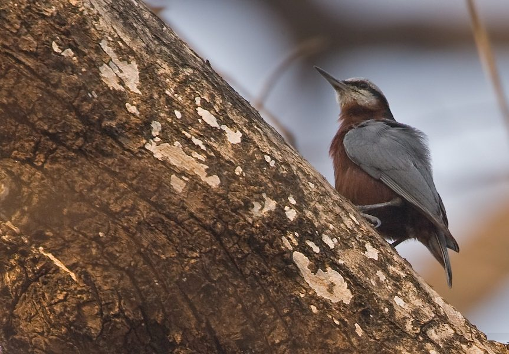

इंडियन नटहैचIndian Nuthatch
Sitta castanea · Sittidae · BRD-0182

- Scientific name वैज्ञानिक नाम
- Sitta castanea Lesson, 1830
- Family कुल
- Sittidae
- Hindi हिंदी
- इंडियन नटहैच
- Local names स्थानीय नाम
- indian nuthatch, nuthatch
- Status here यहाँ की स्थिति
- native
- Movement आवागमन
- Resident, here all year
- Known from कहाँ दर्ज
- Others have published records from the Basti–Ayodhya districts बस्ती–अयोध्या के ज़िलों से दूसरों के प्रकाशित अभिलेख
- IUCN IUCN
- LC
- Review समीक्षा
- audited and independently read
When to look कब देखें
Present all year. साल भर मौजूद।
Uses and possibilities उपयोग और संभावनाएँ
Drawn from the documented uses in the profile below, where each is labelled traditional, current or a research lead. All uses →
इंडियन नटहैच / Indian Nuthatch
Sitta castanea Lesson, 1830 — Sittidae
इंडियन नटहैच — पूर्वी उत्तर प्रदेश के साल और अन्य पेड़ों की छाल पर "चढ़ने वाली" एक छोटी, सक्रिय और आवाज़ वाली चिड़िया, जो ऊपर से नीचे की ओर चिपकी हुई चलती है। यह चिड़िया पेड़ों की छाल में छिपी कीटों को खोजने के लिए अपनी पतली, नुकीली चोंच का उपयोग करती है। इसका नाम "सीटेबाज़" इसकी तीक्ष्ण, सीटी जैसी आवाज़ से आता है — "सीट-सीट-सीट"। यह चिड़िया हमेशा सक्रिय रहती है और अपनी दक्षता से पेड़ों पर चलना बेहद कुशलता से करती है।
Quick Identification त्वरित पहचान
| Feature | Description |
|---|---|
| Size | Small; 12–13 cm long |
| Plumage | Slate-grey above; chestnut underparts |
| Head | Slate-grey with dark eye-stripe |
| Throat | Chestnut-buff |
| Bill | Medium, straight, pointed; black |
| Legs | Short, strong; bluish-grey |
| Behaviour | Moves along tree trunk and branches; often headfirst down trunk |
| Call | Sharp whistles and calls; chit-chit |
Field tip: A small grey-and-chestnut bird that creeps along tree trunks and branches, often moving headfirst downward — behaviour unique among Indian birds. Look for the slate-grey back and chestnut underparts. Sharp, frequent calls.
हिंदी — कैसे पहचानें:
छोटी, भूरी चिड़िया।
पेड़ों पर चढ़ता है — ऊपर से नीचे भी।
सिर धूसर, पेट भूरा।
तेज़ "चित्ती" की आवाज़।
Morphology आकारिकी
Biometrics:
| Measurement | Range |
|---|---|
| Total length | 120–130 mm |
| Wing (folded) | 70–78 mm |
| Tail | 45–50 mm |
| Bill | 16–19 mm |
| Weight | 15–20 g |
Size: 12–13 cm long; small nuthatch.
Plumage: Upperparts slate-grey to blue-grey. Crown and nape concolorous with back.
Distinctive eye-stripe: Dark line running through eye; creates masked appearance.
Throat and underparts: Chestnut-buff to buff-brown; undertail coverts darker buff.
Bill: Medium length, straight, and pointed; black; highly adapted for probing bark crevices and picking insects.
Legs and feet: Short, powerful; bluish-grey; adapted for gripping bark.
Eyes: Dark; surrounded by dark loral region.
Sexes: Slightly dimorphic; females slightly duller than males; males show more vivid chestnut underparts.
Juveniles: Duller than adults; underparts more buff; less distinct features.
Vocalisations. Call repertoire:
- Main call: Loud, clear whistle chit-chit-chit-chit or kit-kit-kit, repeated rapidly.
- Contact calls: Shorter chip notes when moving through vegetation.
- Song: Series of whistled notes; less melodious than warbler songs.
हिंदी: तेज़ "चित्ती-चित्ती-चित्ती" आवाज़ करता है। अकेले या जोड़े में शोर मचाता है।
Behaviour & Ecology व्यवहार और पारिस्थितिकी
Bark gleaner: Indian Nuthatches are specialist bark foragers, moving along tree trunks and branches (often headfirst downward) in search of insects. Diet consists of:
- Small beetles and larvae
- Insects in tree bark crevices
- Spiders and spider eggs
- Small insects and arthropods
Feeding method: Move along bark surface, probing crevices with bill; peck out insects from beneath loose bark. Often work downward from crown to base of trunk.
Locomotion: Unique among Indian birds in ability to move headfirst down tree trunks; aided by strong clawed feet.
Social behaviour: Solitary or in pairs; may form small groups in winter. Maintain territories year-round.
Territory: Defend feeding territories; often remain in same area year-round.
Association: Sometimes join mixed feeding flocks of other small birds.
हिंदी: पेड़ों की छाल पर कीटें खोजता है। ऊपर से नीचे चलता है। अपना इलाका रखता है। अकेले या जोड़े में।
Life Cycle / Phenology जीवन चक्र
Year-round resident: Breeds in the region; no seasonal migration.
Breeding: March–June; peaks April–May in Uttar Pradesh. Monogamous pairs.
Nest: Uses existing cavities in trees or old woodpecker holes. Line nest with down and leaves.
Clutch: 3–5 eggs (usually 4); incubation 14–15 days.
Fledging: Young leave nest at 15–17 days. Single brood per year.
Territoriality: Pairs maintain territories year-round; call frequently to maintain presence.
Feeding: Active throughout day; activity peaks in early morning and late afternoon.
हिंदी: साल भर रहता है। मार्च से जून में अंडे देता है। 4 अंडे देता है। 15 दिन में बच्चे उड़ जाते हैं।
Host Plants or Prey आहार
| Food Type | Examples | Feeding Behaviour |
|---|---|---|
| Bark insects | Small beetles, ants | Glean from tree bark |
| Insect larvae | Wood-borers, other larvae | Probe and extract from crevices |
| Spiders | Various spider species | Pick from bark and foliage |
| Small arthropods | Centipedes, other small invertebrates | Opportunistic gleaning |
हिंदी: छाल में छिपी कीटें खाता है। भीतर की सूंडियाँ भी निकालता है। छोटी कीटें और मकड़ियाँ खाता है।
Predators / Natural Enemies शत्रु
- Avian predators: Shrikes, small eagles, hobby falcons
- At nest: Snakes, rats, woodpeckers (competing for cavities)
- Mammalian predators: Squirrels, rats (competing for cavities)
- Parasites: Avian parasites, mites
हिंदी: शिकारी चिड़ियाँ इसका शिकार कर सकती हैं। साँप घोंसलों को परेशान कर सकते हैं। गिलहरियाँ घोंसलों के लिए प्रतिद्वंद्विता करती हैं।
Agricultural / Human Relevance कृषि प्रासंगिकता
Pest control: Feeds on wood-boring insects and bark beetles; contributes to natural pest control in forests and gardens.
Cavity use: Competes with other cavity-nesting species for limited nesting sites; availability of cavities limits population.
Habitat requirement: Depends on maintenance of trees with suitable nesting cavities and bark insect populations.
Indicator species: Presence indicates healthy woodland with diverse insect fauna and old-growth trees.
हिंदी: यह चिड़िया वन्यजीव अधिनियम 1972 की अंतर्गत संरक्षित है। पेड़ों की हानिकारक कीटों को खाती है, कृषि के लिए उपयोगी है।
Expected Locally स्थानीय रूप से अपेक्षित
Not a field record. Written from published accounts for eastern Uttar Pradesh. No confirmed local sighting yet — if you have seen it, that is what the atlas needs.
अभी तक स्थानीय पुष्टि नहीं। यह विवरण प्रकाशित स्रोतों से है, किसी अवलोकन से नहीं।
This species is NOT a field record. The distribution below is based on published sources describing where Indian Nuthatch should be looked for in eastern Uttar Pradesh.
Range: Expected in sal forests, deciduous woodlands, and gardens with old trees throughout Basti–Ayodhya region.
Habitat preference: Trees with suitable nesting cavities and abundant bark insects; sal, mango, and other large deciduous trees.
Seasonality: Resident year-round; locally nomadic following food availability but generally sedentary.
Published records: Likely present in sal forests and wooded areas. GBIF holds occurrence records from similar habitat in the region.
What a first record would be: A dated photograph clearly showing the bird's distinctive slate-grey back and chestnut underparts on a tree trunk, with GPS coordinates and date, submitted through the About page.
हिंदी: यह चिड़िया स्थानीय रूप से अपेक्षित है। साल के जंगलों में रहती है। साल भर देखी जाती है।
Distribution वितरण
Global range: Indian subcontinent endemic; found only in India.
In India: Distributed across much of peninsular and central India in suitable woodland habitat.
In Uttar Pradesh: Resident in northern and eastern districts in sal forests and open woodlands.
In Basti district / eastern UP: Resident in sal forests and wooded areas; likely common but easily overlooked due to small size and cryptic behaviour.
Research Questions शोध प्रश्न
- What are the habitat requirements and home-range sizes of Indian Nuthatches in different forest types?
- How do cavity availability and competition with other species affect breeding success and population size?
- What is the diet composition across seasons, and how does it reflect availability of bark insects?
- क्या साल के जंगलों की कटाई से इस चिड़िया की संख्या में गिरावट आई है?
- Do individuals show any seasonal movements, or are they strictly resident year-round?
- क्या पुरानी पेड़ों की कमी से इस चिड़िया के घोंसलों की जगह की कमी हो रही है?
Similar Species मिलती-जुलती प्रजातियाँ
| Species | Key Difference | Hindi | Field Rule |
|---|---|---|---|
| {{Chestnut-bellied Nuthatch}} (Sitta cinnamoventris) | Larger (14 cm); uniformly chestnut below; occurs in peninsular India | \ | Chestnut-bellied is larger and does not occur in eastern UP. |
| White-breasted Nuthatch (Sitta himalayensis) | Larger (13.5 cm); white breast; black crown | सफ़ेद छाती वाली | White-breasted has white breast and black cap. Indian has chestnut breast and grey cap. |
Field rule: Indian Nuthatch is the only small nuthatch with slate-grey back and chestnut underparts. Its small size, dark eye-stripe, and headfirst descent of tree trunks are distinctive. Note the sharp whistled calls.
Taxonomy & Classification वर्गीकरण
Original description. Described by René-Primevère Lesson in 1830 in Traité d'Ornithologie, page 272, as Sitta castanea. Type locality is India (likely Himalayan foothills).
Subspecies. Monotypic — no subspecies are currently recognised.
Family and order placement. Order Passeriformes; family Sittidae (nuthatches). The genus Sitta contains the nuthatches, specialised bark foragers.
Phylogenetic notes. Part of an Asian radiation of Sitta species. Closely related to other small Asian nuthatches.
IUCN status rationale. Assessed as Least Concern (LC) globally. Populations remain widespread in suitable habitat despite some forest loss. Continued presence in gardens and wooded areas supports populations in human-modified landscapes.
हिंदी: यह चिड़िया सिर्फ भारत में मिलती है। हिमालय की पहाड़ियों से लेकर दक्षिण भारत तक पाई जाती है। कानून से संरक्षित है।
Photo Gallery फोटो गैलरी
No photos yet — add field photos to media/species/indian_nuthatch/ and run node scripts/sync_photos.js.
Wanted photos:
- Moving headfirst down tree trunk
- Perched on trunk showing underparts
- Close-up of head and eye-stripe
- Pair in territory
- At nest cavity
References संदर्भ
- Lesson, R. P. (1830). Traité d'Ornithologie ou Description des Oiseaux. Livre, Paris. P. 272.
- Ali, S. & Ripley, S. D. (1972). Handbook of the Birds of India and Pakistan. Vol. 7 (Warblers to Redstarts). Oxford University Press, Delhi. Pp. 266–268.
- Cramp, S. & Perrins, C. M. (eds) (1993). Handbook of the Birds of Europe, the Middle East and North Africa: The Birds of the Western Palearctic. Vol. 7 (Flycatchers to Shrikes). Oxford University Press. Pp. 298–324.
- Rasmussen, P. C. & Anderton, J. C. (2005). Birds of South Asia: The Ripley Guide. Smithsonian Institution, Washington. Vol. 2, pp. 467–468.
- GBIF Occurrence Data — Sitta castanea, India.
- IUCN Red List (2023). Sitta castanea — BirdLife International assessment. IUCN, Cambridge. Status: Least Concern.
Source file: species/fauna/birds/indian_nuthatch.md